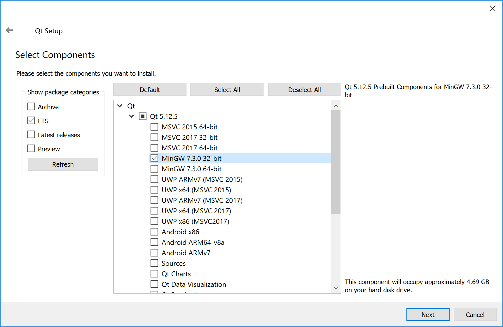
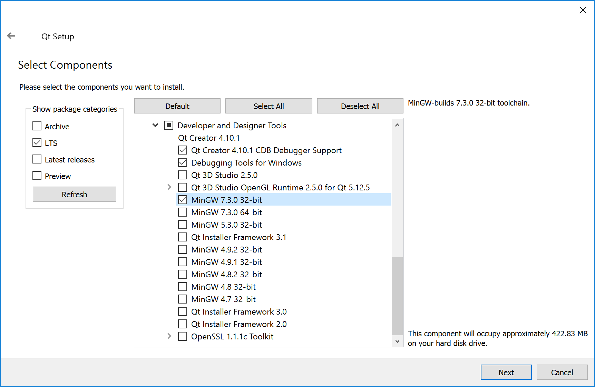
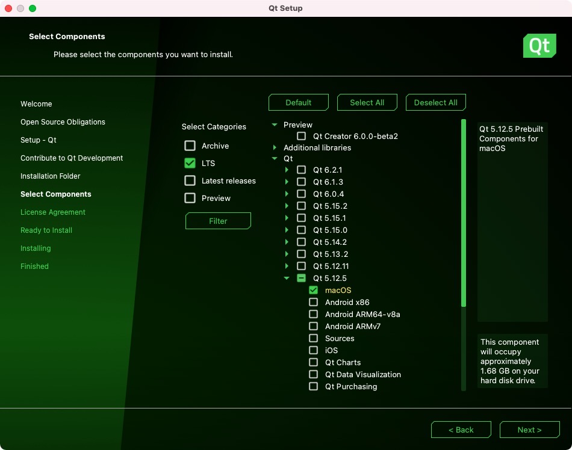
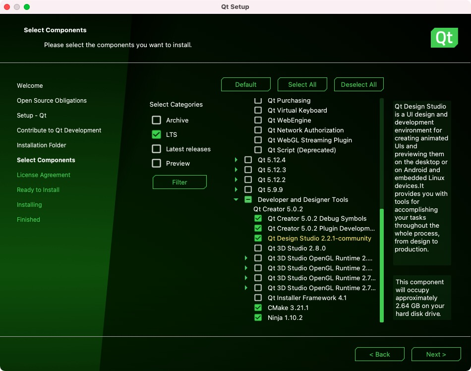
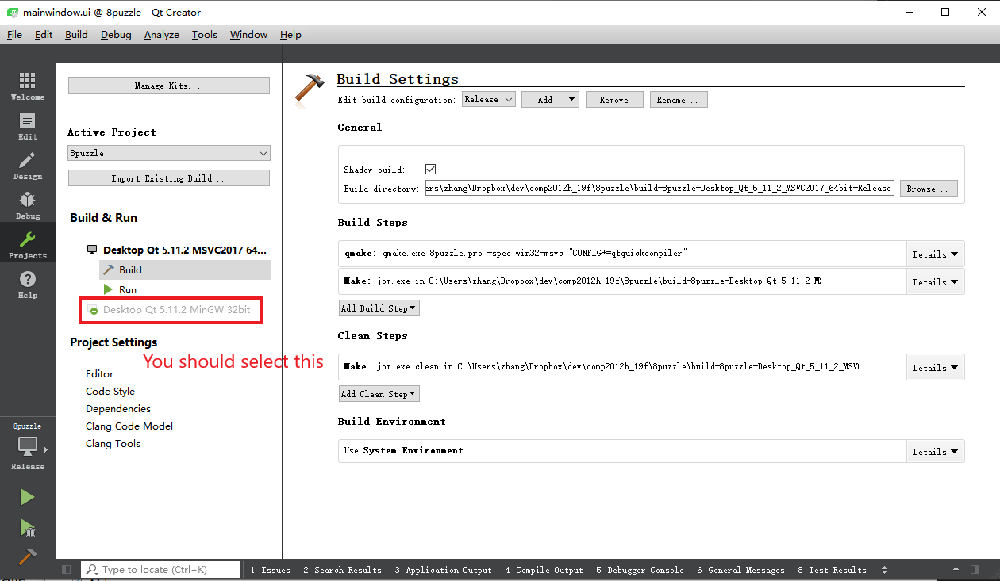
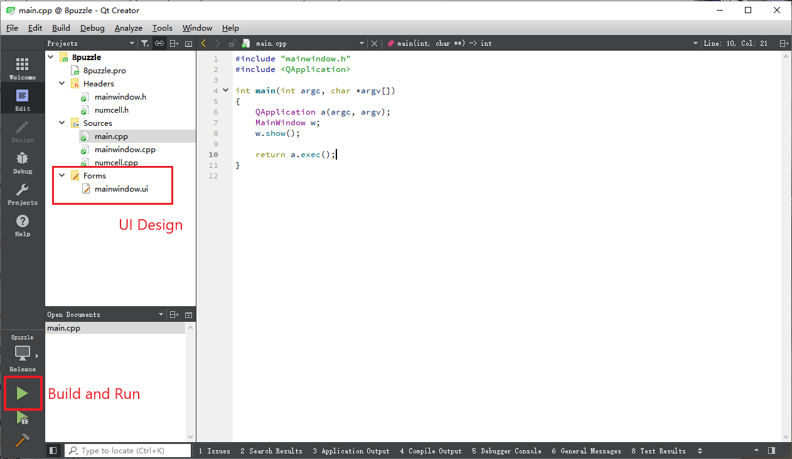
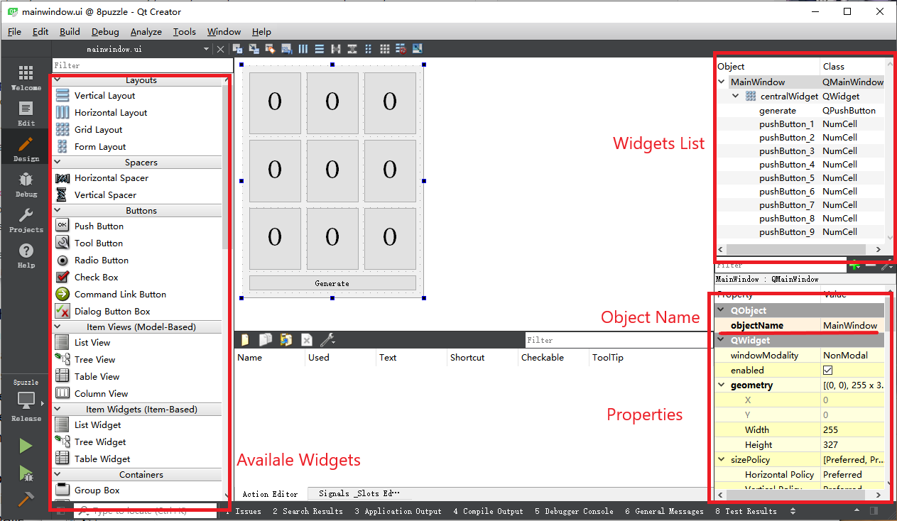

In this lab we will implement a GUI for the 8 puzzle game. The following description will guide you complete the skeleton code.
Download the installer from here or the offline installer here. Login to your account (or just skip it) and choose the install directory. Choose the following 2 components.


You can choose other version of MinGW if you have special reason as long as the 2 components are consistent.
For MacOS:


Note that the version of Qt installed in lab is not the latest version. But you should have no problem using the common features.
Qt is a cross-platform application development framework. In this course we mainly utilize the API for creating GUI for your program. In Qt, the widgets on the interface (buttons, input box, etc.) are maintained by classes. The widget can be created by creating the class, and its properties can be set by modifying the member variables of the class. These predefined classes can also be inherited so as to be customizable.
Unlike the normal console applications you wrote in this course before, the programs with GUI do not run sequentially. Instead, they wait for the events triggered by user inputs and call the corresponding handlers after the initialization of the program. Qt uses signals and slots mechanism to register the handlers for various events.
Use QtCreator to open 8puzzle.pro. If QtCreator complains about there are no
correct settings, you need to choose the toolchain. Choose MinGW in our case.


First double click Forms/mainwindow.ui to go to the UI editing view. You can see 9 buttons
for the puzzle and one generate button to generate a new puzzle.

Currently all the buttons show 0. This is because this UI editing tool is best suitable for
static content. Since the numbers will be changed according to user input, we will initialize the numbers
by codes.
The widgets list on the right side shows that the number buttons have type NumCell while the
generate button has type QPushButton, which is a built-in type. This is because
we want to store the row and column index in the number cells so that they know their own location. To
achieve this, we create NumCell that inherits QPushButton and also has
additional member variables to store the location.
Now go back to the code view and see main.cpp. The main function creates and executes the
main window, which is defined in MainWindow.cpp. In the constructor the main window, we set
the row and column index for every cells and generate a puzzle. Note there is a line
ui->setupUi(this) that initializes the widgets created in the UI editor. The content in
the object ui is automatically generated by the Qt framework in the building process. You can
access the widgets by ui-><name_of_widget>, where the name is defined by setting the
objectName attribute in the UI editor.
Now the program finishes the initialization. In the following tasks, we will bind the input events with the corresponding handler.
We expect that when we click the generate button, the 9 cells will show a new puzzle. We now
have prepared the generate function that can generate a valid puzzle and update the UI. All we need to do
is to bind the click event to this function.
We have 3 ways to do the binding. One is to explicitly bind by connect function. And if the
widget is created in the UI editor, we have the second option, which is to let Qt do the binding by
following the naming convention. The third one is to inherit the predefined class and override the
predefined event handler. Here we use the second one. And in the following tasks we will try the first
one.
In Qt, if we want to create the slot (handler) for the signal (event) <signal> emitted
by <emit_instance>, we just need to create a function named
on_<emit_instance>_<signal> and Qt will automatically connect the slot to the
signal. In our case, <emit_instance> is generate, which is the name of the
generate button, and <signal> is clicked, which is predefined by Qt. One
special point is that we need to put a predefined macro slots after the access control
indicator. In our case, we need to add the following code to the declaration of MainWindow.
private slots:
void on_generate_clicked();
And this function just call the prepared generate() function.
void MainWindow::on_generate_clicked()
{
generate();
}
QPushButtonWe hope the number buttons know their location so as to judge whether number can be moved. However,
predefined QPushButton doesn't have these member variables. So we create NumCell
which derives from the QPushButton. NumCell still preserves all the features of
the push button and at the same time knows it's location by storing it in the new variables.
Complete the declaration of NumCell as follows and implement the accessors/mutators.
class NumCell: public QPushButton {
...
private:
int row, col, num;
public:
NumCell(QWidget *parent);
int get_row();
void set_row(int row);
int get_col();
void set_col(int col);
int get_num();
void set_num(int num);
};
Note that the constructor takes QWidget *parent as an argument. It is required by the base
class. So implement the constructor as follows.
NumCell::NumCell(QWidget *parent)
:QPushButton(parent), row(0), col(0), num(0) {}
In this task we connect the click signal of the NumCell with the
operate slot of the MainWindow. In this task we will define a new signal with
arguments, which can pass the clicked location to the slot function.
The event chain is as follows: for each NumCell, the predefined clicked signal
is connected to a custom on_clicked slot. The on_clicked slot manually emits a
custom operate_signal(int row, int col) signal with arguments. The
operate_signal from all the NumCell are connected with the prepared
operate(int row, int col) of MainWindow. Here we create a new signal because the
predefined signal cannot pass parameters to the slot.
We need to add the following to the NumCell.
// numcell.h
class NumCell: public QPushButton {
...
public slots:
void on_clicked();
signals:
void operate_signal(int rol, int col);
};
// numcell.cpp
void NumCell::on_clicked() {
emit operate_signal(row, col);
}
In this case we need to manually connect the signal and the slot.
// numcell.cpp
NumCell::NumCell(QWidget *parent)
:QPushButton(parent), row(0), col(0), num(0) {
connect(this, &NumCell::clicked, this, &NumCell::on_clicked);
}
And add the following to the MainWindow.
// mainwindow.h
class MainWindow : public QMainWindow {
...
private slots:
void operate(int row, int col);
void on_generate_clicked();
...
};
// mainwindow.cpp
void MainWindow::on_generate_clicked()
{
generate();
}
Also we need to connect the signals from every number cells.
// mainwindow.cpp
MainWindow::MainWindow(QWidget *parent) :
QMainWindow(parent),
ui(new Ui::MainWindow)
{
...
for (int i=0; i<3; i++) {
for (int j=0; j<3; j++) {
num_cells[i][j]->set_row(i);
num_cells[i][j]->set_col(j);
connect(num_cells[i][j], &NumCell::operate_signal, this, &MainWindow::operate);
}
}
...
}
Modify the program so that it supports moving numbers by WASD. You will need the third method of handler definition. You may want to check this.
This lab aims at introducing the basic logic of the Qt programs. But we cannot cover all the topics. If you would like to add more features, try to search on the internet for similar questions (e.g. stackoverflow) and check official document for details of API.